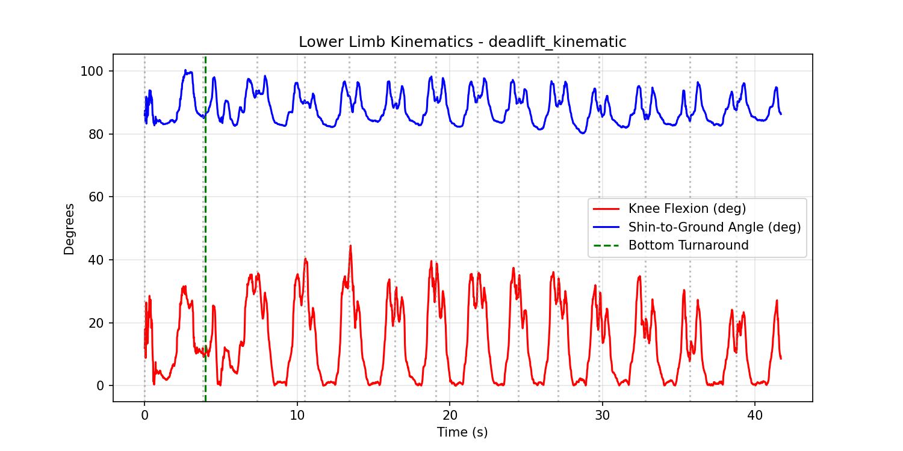
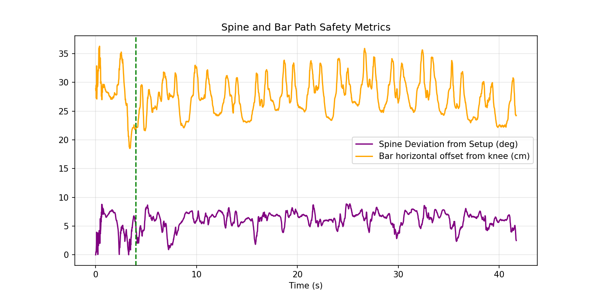
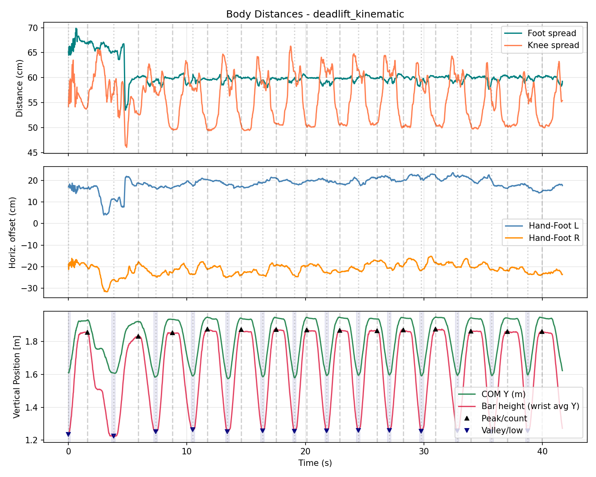
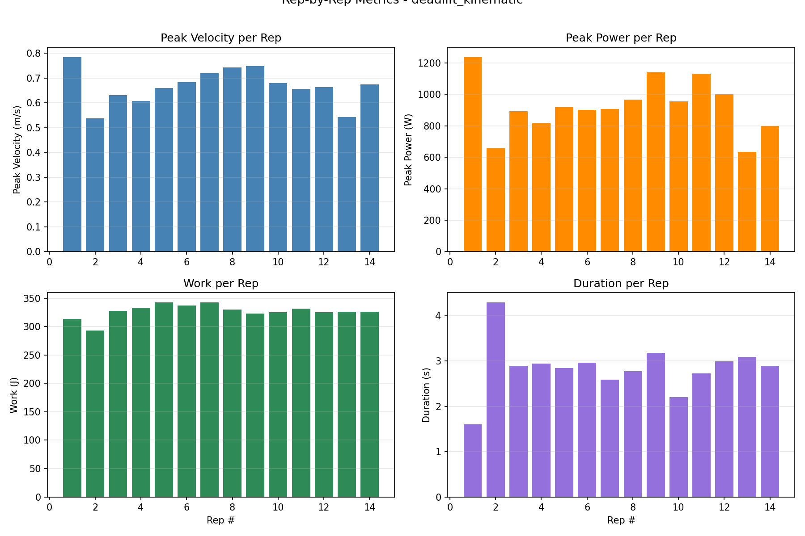
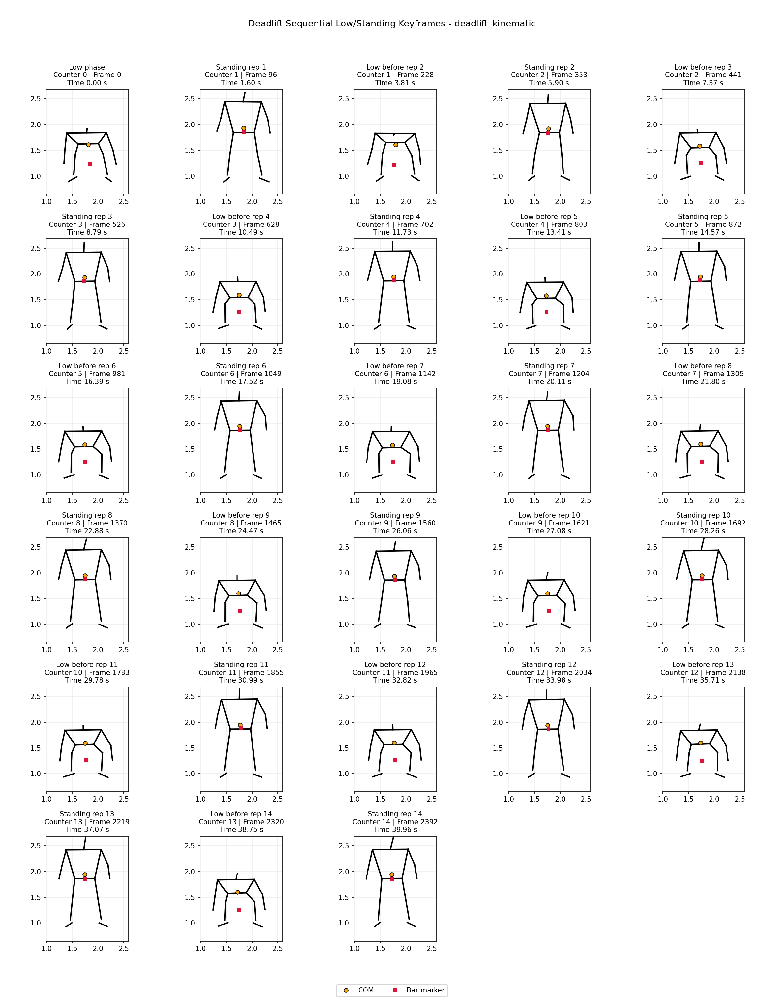
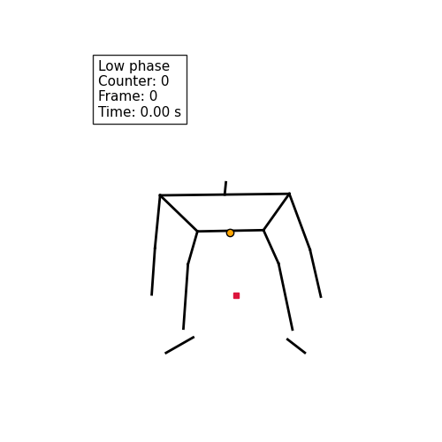

Analysis Target: deadlift_kinematic
Execution Date: 2026-06-09 14:33:04
| Evaluated Criterion | Measured Value | Safety Threshold | Status |
|---|---|---|---|
| Knee Flexion (Internal Angle) | 9.9° | RDL: 10° - 15° | Stiff: 0° - 5° | Informative |
| Tibia Angle to Ground Plane | 85.5° | 90° Vertical (±10° Tolerance) | PASS |
| Spine Angular Deviation from Setup | 5.5° | < 5.0° Flexion Extension Change | WARNING: Excessive Lumbar Flexion Risk |
| Bar Path Distance from Tibia | 21.9 cm | ≤ 5.0 cm Horizontal Gap | WARNING: Mechanical Moment Arm Too Large |
| Foot Spread (Ankle-to-Ankle) | 65.4 cm | Individual-dependent | Informative |
| Knee Spread (Knee-to-Knee) | 59.1 cm | Track over ankle | Informative |
| Hand-Foot Horizontal Offset (L / R) | 10.8 / -26.5 cm | ≤ 5.0 cm for vertical grip | Informative |
| Setup Arm Verticality | 6.3 cm shoulder-wrist horizontal delta | ≤ 5.0 cm absolute offset | FAIL: Arm is angled forward. Hip position is too low. |
| Bar Over Midfoot Setup | 33.3 cm wrist-midfoot horizontal error | ≤ 3.0 cm absolute offset | WARNING: Position the bar over midfoot before pulling. |
| Initial Pull Synchronism | First 15% of concentric phase | Knee extension rate ≤ 2x hip opening rate | PASS: Hips and knees rise synchronously at the start of the pull. |
| Rep | Duration (s) | Conc. (s) | Ecc. (s) | Peak Vel (m/s) | Mean Power (W) | Work (J) | COM ROM (m) | Bar ROM (m) | Foot Sp. (cm) | Knee Sp. (cm) |
|---|---|---|---|---|---|---|---|---|---|---|
| 1 | 1.60 | 1.60 | 0.00 | 0.785 | 244.5 | 313.20 | 0.323 | 0.623 | 65.2 | 54.2 |
| 2 | 4.29 | 2.09 | 2.20 | 0.537 | 154.1 | 293.31 | 0.325 | 0.634 | 65.2 | 57.1 |
| 3 | 2.89 | 1.42 | 1.47 | 0.630 | 261.9 | 328.10 | 0.353 | 0.603 | 59.5 | 57.1 |
| 4 | 2.94 | 1.24 | 1.70 | 0.608 | 273.7 | 333.20 | 0.359 | 0.613 | 59.9 | 57.9 |
| 5 | 2.84 | 1.15 | 1.69 | 0.659 | 331.2 | 342.80 | 0.374 | 0.625 | 60.1 | 60.2 |
| 6 | 2.96 | 1.14 | 1.82 | 0.683 | 331.3 | 337.04 | 0.363 | 0.622 | 59.5 | 59.4 |
| 7 | 2.59 | 1.04 | 1.55 | 0.719 | 347.7 | 342.29 | 0.368 | 0.620 | 59.9 | 61.2 |
| 8 | 2.77 | 1.09 | 1.69 | 0.742 | 324.1 | 329.90 | 0.354 | 0.615 | 59.4 | 60.6 |
| 9 | 3.17 | 1.59 | 1.59 | 0.748 | 302.3 | 322.96 | 0.352 | 0.612 | 60.0 | 61.5 |
| 10 | 2.20 | 1.19 | 1.02 | 0.679 | 319.8 | 325.05 | 0.350 | 0.614 | 59.7 | 61.2 |
| 11 | 2.72 | 1.20 | 1.52 | 0.657 | 284.1 | 331.74 | 0.357 | 0.628 | 59.2 | 59.7 |
| 12 | 2.99 | 1.15 | 1.84 | 0.664 | 282.3 | 325.32 | 0.354 | 0.621 | 59.7 | 59.0 |
| 13 | 3.09 | 1.35 | 1.74 | 0.544 | 275.8 | 326.49 | 0.351 | 0.617 | 59.2 | 55.3 |
| 14 | 2.89 | 1.20 | 1.69 | 0.674 | 310.7 | 326.36 | 0.351 | 0.611 | 60.1 | 56.1 |
| Metric | Max | Min | Range | Mean | CV% | Best Rep | Worst Rep |
|---|---|---|---|---|---|---|---|
| Peak Velocity (m/s) | 0.785 | 0.537 | 0.248 | 0.666 | 10.7% | #1 | #2 |
| Mean Velocity (m/s) | 0.373 | 0.165 | 0.208 | 0.308 | 17.4% | #7 | #2 |
| Peak Power (W) | 1238.135 | 635.641 | 602.494 | 926.423 | 18.5% | #1 | #13 |
| Mean Power (W) | 347.661 | 154.112 | 193.549 | 288.823 | 17.0% | #7 | #2 |
| Work (J) | 342.798 | 293.313 | 49.485 | 326.983 | 3.8% | #5 | #2 |
| ROM (m) | 0.374 | 0.323 | 0.051 | 0.352 | 3.9% | #5 | #1 |
| Duration (s) | 4.293 | 1.604 | 2.689 | 2.854 | 20.3% | #2 | #1 |
| Concentric (s) | 2.088 | 1.036 | 1.052 | 1.317 | 21.4% | #2 | #7 |
| Eccentric (s) | 2.205 | 0.000 | 2.205 | 1.537 | 33.2% | #2 | #1 |






deadlift_kinematic_deadlift_anim_20260609_143303.gif